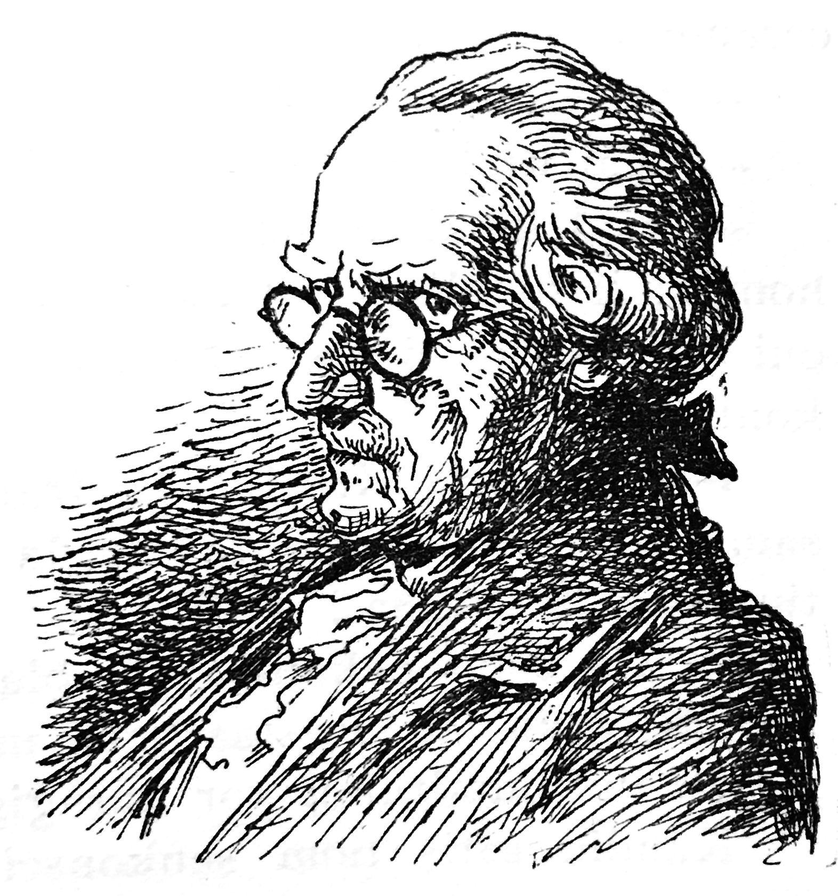

Kandid kaj Marten iras al la bordoj de Anglio; kion ili vidas tie.
― Ha Panglos! Panglos! Ha! Marten! Marten! Ha! mia kara Kunegond! kio do estas ĉi tiu mondo? diris Kandid sur la holanda ŝipo.
― Estas io tre freneza kaj tre abomena, respondis Marten.
― Vi konas Anglion; ĉu oni estas tie same freneza kiel en Francio?

Marten
― Estas alia speco de frenezo, diris Marten. Vi scias, ke tiuj du nacioj militas unu kontraŭ la alian pro kelkaj akroj da neĝo ĉirkaŭe de Kanado, kaj ke ili elspezas por tiu bela milito multe pli ol valoras Kanado (↓1). Mi ne estas sufiĉe klera por diri al vi, ĉu en iu lando estas pli da frenezuloj ol en alia; mi scias nur, ke ĝenerale la homoj, kiujn ni baldaŭ vidos, estas tre nigrehumoremaj.
Tiel babilante, ili albordiĝis ĉe Portsmt; amasego da homoj kovris la bordon, kaj atente rigardis dikulon, kiu sur la ferdeko de unu ŝipo el la aro staris sur la genuoj, kun la okuloj vinditaj; kvar soldatoj, postenigitaj vid-al-vide tiu homo tute trankvile pafis al li po tri kuglojn en la kranion; kaj la tuta kunvenintaro foriris treege kontenta
― Kio estas ĉio ĉi? diris Kandid, kaj kiu demono superregas ĉie?
Li demandis, kiu estas tiu dikulo, kiun oni ĵus ceremonie mortigis?
― Ĝi estas admiralo (↓2), oni respondis al li.
― Kaj kial mortigi tiun admiralon?
― Tial ke li ne kaŭzis la morton de sufiĉe da homoj; li batalis kontraŭ francan admiralon, kaj oni opiniis, ke li ne estis sufiĉe proksime de sia kontraŭulo.
― Sed, diris Kandid, la franca admiralo estis same malproksime de la angla admiralo, kiel ĉi tiu estis de la alia!
― Tio estas nekontraŭdirebla, oni rebatis al li; sed en ĉi tiu lando estas bone mortigi de tempo al tempo iun admiralon por kuraĝigi la aliajn.
Kandid estis tiom senkonsciigita kaj ofendita de tio, kion li vidis kaj de tio, kion li aŭdis, ke li eĉ ne volis elŝipiĝi, kaj kontraktis kun la holanda ŝipmastro (je la risko, ke li ŝtelos lin, kiel tiu el Surinam) por ke li veturigu lin senprokraste al Venezio.
La mastro estis preta post du tagoj. Oni randiris Francion, oni pasis ĉe vido al Lisbono, kaj Kandid tremis (↓3). Oni eniris la markolon kaj la Mediteraneon; fine oni albordiĝis ĉe Venezio. «Dio estu laŭdata! diris Kandid ĉirkaŭbrakante Marten; estas ĉi tie, kie mi revidos la belan Kunegond. Mi fidas al Kakambo, kiel al mi mem. Ĉio estas bona, ĉio iras bone, ĉio iras kiel eble plej bone.»